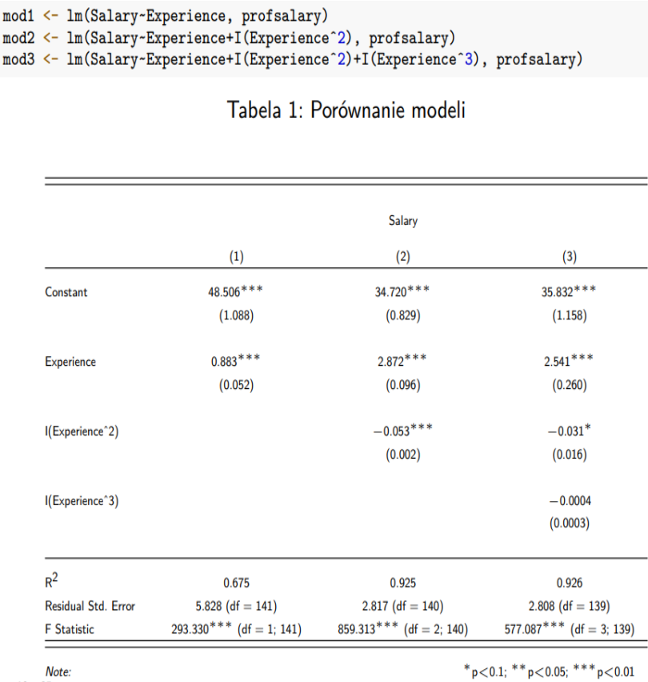

SMLiN_egzamin
Zagadnienia do przygotowania na egzamin ustny z Statystycznych Modeli Liniowych i Nieliniowych
1. Podaj postać ogólną modelu regresji wielorakiej.
Przez model liniowy (w sensie ścisłym) będziemy rozumieć wszystkie modele postaci \[y = E(Y|X_1 = x_1 , ... , X_p = x_p) \stackrel{\text{def}}{=} \beta_0 + \beta_1 x_1 + ... + \beta_px_p + \varepsilon,\] gdzie \(Y\) jest zmienną objaśnianą, \(X_1,...,X_p\) są zmiennymi objaśniającymi, a \(x_1,...,x_p\) ich realizacjami, \(\varepsilon\) jest błędem modelu, natomiast \(\beta_0,...,\beta_p\) nieznanymi parametrami równania (parametrami strukturalnymi równania).
Przez modele liniowe (w szerszym sensie - liniowe względem parametrów, zwane także linearyzowalnymi) rozumie się takie modele, które zawierają zmienne objaśniające poddane transformacji (np. \(X_i^3\), \(log(X_i)\) lub interakcje zmiennych objaśniających (np. \(X_2X_3\)).
2. Przedstaw model liniowy w zapisie macierzowym.
Zapis macierzowy modelu liniowego przyjmuje postać \[\textbf{Y}=\textbf{X}\beta + \varepsilon,\] gdzie
\[\textbf{Y} =\begin{pmatrix} y_1 \\ y_2 \\ \vdots \\ y_n \end{pmatrix}, \textbf{X} =\begin{pmatrix} 1 & x_{11} & \cdots & x_{1p} \\ 1 & x_{21} & \cdots & x_{2p} \\ \vdots & \vdots & \ddots & \vdots\\ 1 & x_{n1} & \cdots & x_{np} \end{pmatrix}, \beta =\begin{pmatrix} \beta_0 \\ \beta_1 \\ \vdots \\ \beta_p \end{pmatrix}, \varepsilon =\begin{pmatrix} \varepsilon_1 \\ \varepsilon_2 \\ \vdots \\ \varepsilon_n \end{pmatrix} \]
Dodatkowo o błędzie modelu przyjmuje się, że \(E(\varepsilon|\textbf{X}) = 0\) i \(Cov(\varepsilon|\textbf{X}) = \sigma^2I\).
3. Wymień założenia jakie muszą być spełnione, aby parametry modelu otrzymane metodą najmniejszych kwadratów były BLUE.
Na to aby estymatory parametrów strukturalnych modelu otrzymane metodą najmniejszych kwadratów(OLS) były BLUE(Best Linear Unbiased Estimators) muszą być spełnione następujące warunki (tw. Gaussa-Markova):
Charakter zależności pomiędzy zmiennymi objaśniającymi, a objaśnianą powinien być liniowy.
Liczba obserwacji w próbie musi być większa (najlepiej znacznie większa) od liczby szacowanych w modelu parametrów.
Zmienne objaśniające nie powinny wykazywać współliniowości (redundancji - nadmiarowości).
Składniki losowe (błędy) powinny być nieskorelowane o stałej wariancji i mieć średnią równą zero, co zapisujemy \(E(\varepsilon|\textbf{X}) = 0\) i \(Cov(\varepsilon|\textbf{X}) = \sigma^2I\).
*4. Na czym polega metoda najmniejszych kwadratów?
5. Podaj wzór na wektor parametrów \(\hat\beta\)“.
Estymator \(\hat\beta = (X'X)^{-1}X'y\) jest nieobciążony o wiariancji \(Cov(\hat\beta) = (X'X)^{-1}\sigma^2\).
6. Podaj twierdzenie z dowodem mówiące o postaci macierzy kowariancji parametrów modelu liniowego.
\[Cov(\hat\beta) = (X'X)^{-1}\sigma^2\] Ponieważ
\[\begin{array}a Cov(\hat\beta) = Cov((X'X)^{-1}X'y) = \\ (X'X)^{-1}X'Cov(y)((X'X)^{-1}X')' = \\ (X'X)^{-1}X'X(X'X)^{-1}\sigma^2 = (X'X)^{-1}\sigma^2\end{array}\]
7. Podaj wzór estymatora wariancji \(\sigma^2\) dla regresji liniowej i podaj jego własności.
Nieobciąonym estymatorem wariancji \(\sigma^2\) w regresji wielorakiej jest
\[s^2 = \frac{e'e}{n-p-1} = \frac{1}{n-p-1}\sum\limits^n_{i=1}(y_i - \hat y_i)^2\]
Przy czym nalezny pamiętać, że jeśli \(\varepsilon \sim N(0, \sigma^2I)\), to \[s^2 \sim \chi^2(n-p-1) \text{ - ma rozkład chi}^2 \text{ z }n - p -1\text{ stopniami swobody}\]
8. Do czego służy test F w modelach liniowych?
Test F jest testem globalnym służącym do oceny jakości modelu w kontekście istotności statystycznej parametrów strukturalnych. Wartość statystyki F pokazuje, czy istnieje związek między zmiennymi objaśniającymi a zmienna objaśnianą. Im bardziej statystyka F różni się od 1, tym lepiej, tzn. możemy odrzucić hipotezę zerową
\(H_0: \beta_1 = \beta_2 = \dots = \beta_p = 0\)
\(H_1: \beta_1 \neq 0\) dla conajmniej jedngo i
Dany jest wzorem \[F = \frac{\frac{SSR}{p}}{\frac{RSS}{n-p-1}}\] gdzie
SSR jest sumą kwadratów różnicy między linią regresji, a średnią y-ków (wariancja wyjaśniana przez model)
RSS jest sumą kwadratów odchyleń, czyli sumą kwadratów różnic między wartością dopasowaną, a wartością w próbie. (wariancja resztowa)
Jeśli część wariancji wyjaśnianej przez model jest duża w stosunku do wariancji resztowej, to najczęściej będziemy odrzucać hipotezę H0, co oznacza, iż co najmnjej jedna ze zmiennych objaśniających użytych w modelu ma istotny wpływ na zmienną objaśnianą.
9. Czym są modele zagnieżdżone?
Model M* jest zagnieżdżony w modelu M gdy mozna go uzyskać poprzez usunięcie z modelu M pewnych zmiennych. Zatem model \[y = X_1\beta^*_1+\varepsilon^*\] jest zagnieżdżony w modelu \[y = X\beta+\varepsilon=(X_1,X_2)\left( \beta_1 \atop \beta_2 \right) + \varepsilon = X_1 \beta_1 + X_2\beta_2+\varepsilon\] Należy tu wyraźnie zaznaczyć, że parametry \(\beta_1\) i \(\beta^*_1\) mogą się różnić, ponieważ model zredukowany nie uwzględnia zestaw zmiennych \(X_2\).
10. Jakie są obciążenie i wariancja parametrów modeli niedouczonych i przeuczonych?
Niedouczenie modelu redukuje wariancję parametrów modelu \(V\!ar(\hat\beta)\) oraz wariancje predykcji \(V\!ar(y_0)\), jednocześnie powodując obciążenia obu. Można rownież wykazać, że w modelach niedouczonych estymator \(s^2\) jest obciążony
Przeuczenie modelu powoduje wzrost wariancji obu wielkości.
11. Jak testujemy poszczególne efekty w modelu regresji wielorakiej?
Można pokazać, że do testowania hipotezy
\(H_0: \beta_j = 0\)
właściwy będzie test: \[t = \frac{\hat\beta_j}{s\sqrt{g_{jj}}}\stackrel{\text{lub}}{=}\frac{\hat\beta_j}{\text{se}(\hat\beta_j)}\] gdzie
\(g_{jj}\) jest j-tą wielkością diagonali macierzy \((X'X)^{-1}\).
Przy założeniu prawdziwości hipotezy \(H_0\) statystyka tam ma rozkład t-studenta z \(n-p-1\) stopniami swobody.
UWAGA: Dla regresji prostej wartości wartości statystyki testowej t jest równa co do wartości bezwzględnej \(\sqrt{F}\)
12. Wymień znane Ci miary dopasowania modelu regresji (podaj wzory 3 z nich).
Dotychczas poznane przez nas miary dopasowania modelu to
\(R^2\) - współczynnik determinacji \[R^2 = \frac{SSR}{SST}\]
RMSE - Pierwiastek błędu średnio-kwadratowego \[\sqrt{\frac{1}{n}\sum\limits^n_{n=1}(y_i - \hat y_i)^2}\]
MAE - Średni błąd bezwzględny \[\frac{1}{n}\sum\limits^n_{n=1}|y_i - \hat y_i|\]
PRESS
CP Mallow’a
GCV
AIC
AICc
BIC
13. Podaj przyczyny i skutki niespełnienia założenia o jednorodności wariancji błędów w modelach regresji.
Przyczyny: najczestszymi przyczynami heterogeniczności wariancji błędu są:
wsteczna zależność
brak w modelu ważnych predyktorów (skorelowanych ze zmienną zależną)
zła specyfikacja modelu
budowa modelu dla danych agregowanych (np. regresja dla średnich grupowych)
Skutki: Estymatory wyznaczone metodą OLS przy naruszeniu jednorodności wariancji są nieefektywne. Ponadto szacunki błędów estymacji parametrów \(\beta\) czyli \(\text{se}(\beta)\) są obciążone.
14. Podaj przyczyny i skutki niespełnienia założenia o liniowym charakterze zależności w modelach regresji.
Przyczyny: Charakter zależności jest nieliniowy (brak liniowości ze względu na parametry). Prawdziwa zależność ma złożony charakter, który da się opisać jedynie modelem nieliniowym (np. \(y = \beta_0 \exp(\beta_1x^{\beta_2} + \varepsilon)\)). Najczęściej brak wiedzy na temat prawdziwej postaci zależności jest powodem dopasowania modelu liniowego w szerszym sensie.
Skutki: Dopasowanie modelu liniowego w szerszym sensie jest niewłaściwe, dlatego zarówno użycie tego modelu do celów sterowania i predykcji jest błędem. Zaleca się ponowną specyfikację modelu, czyli modyfikację estymowanego modelu z liniowego na nieliniowy.
15. Podaj przyczyny i skutki endogeniczności w modelach regresji.
Przyczyny: Endogeniczność predyktora oznacza, że istnieje związek pomiędzy \(X_i\), a \(\varepsilon_i\), wówczas \(E(\varepsilon|X_i) \neq 0\). Mozilwe przyczyny takiego stanu do:
wsteczna zależność,
pominięcie ważnego predyktora,
błędy pomiarowe zmiennych modelu,
zła specyfikacja modelu.
Skutki: fektem endogeniczności predyktorów jest obciążenie parametrów \(\hat\beta\) modelu.
16. Podaj przyczyny i skutki niespełnienia założenia o braku kowariancji pomiędzy błędami w modelach regresji.
Przyczyny: Najczęstsze przyczyny seryjnej korelacji błędów to:
brak w modelu ważnych predyktorów,
zła specyfikacja modelu,
błędy pomiarowe zmiennej niezależnej,
budowa modelu dla danych agregowanych.
Skutki: Estymatory parametrów modelu są nieefektywne, jeśli założenie o niezależności błędów nie jest spełnione. Ponadto, w niektórych przypadkach (regresja dla danych agregowanych) szacunki błędów standaryzowanych estymacji parametrów modelu są obciążone.
17. Czym jest heterogeniczność próbkowa i modelowa?
Heterogeniczność Próbkowa: Powiedzmy, że analizujemy wpływ poziomu zarobków na procent budżetu jaki wydajemy na jedzenie. Można się spodziewać, że wraz ze wzrostem zarobków zmienna zależna będzie charakteryzowała się większym błędem. Wprowadzenie dodatkowej zmiennej np. “lubienie jedzenia”, spowoduje usunięcie niejednorodności, ale analizujemy wówczas nieco inny związek niż w zamierzeniach. Naszym celem było znalezienie wpływu dochodu na procent wydatków na jedzenie bez uwzględniania pozostałych czynników.
Heterogeniczność Modelu: to taka niejednorodność, którą usuwa się przez wprowadzenie dodatkowej zmiennej związanej z jednym z predyktorów. Przykładowo, jeśli zależność ma charakter paraboliczny, to dla modelu liniowego w sensie ścisłym, dostrzeżemy heterogeniczność wariancji. Po wprowadzeniu zmiennej niezależnej w drugiej potędze możemy ją wyeliminować.
18. Podaj przyczyny i skutki nadmiarowości w modelach regresji.
Przyczyny: Istnieją dwa rodzaje nadmiarowości, doskonała współliniowość gdy jeden z predyktorów jest kombinacją liniową pozostałych oraz statystyczna współliniowość, kiedy predyktory modelu wykazują silne korelacje
Skutki: W przypadku doskonałej współniniowości nie da się oszacować parametrów modelu metodą OLS, ponieważ macierz modelu jest źle uwarunkowana. Natomiast gdy mamy doczynienia z nadmiarowością w sensie statystycznym, to wyznacznik macierzy \(X′X\) będzie bardzo bliski zera i to powoduje zawyżenie błędów standardowych estymacji parametrów modelu.
19. Jakie są konsekwencje braku normalności wektora błędów?
Brak normalności rozkładu błędu uniemożliwia testowanie istotności parametrów modelu jeśli próba jest mała, a odchyłka od normalności duża. Ponadto wyznaczenie przedziałow ufności dla regresji i predykcji nie są możliwe.
20. Jakie znasz wykresy diagnostyczne do testowania założeń modelu linowego?
- Residuals vs Fitted - Wykres reszt względem wartości dopasowanych
- Normal Q-Q - wykres kwantylowy
- Scale-Location - wykres reszt standaryzowanych względem wartościdopasowanych
- Cook’s distance - wykres odległości Cooka
- Residuals vs Leverage - wykres reszt względem dźwign
- Cook’s dist vs Leverage - wykres odległości Cooka względem dźwigni
21. Wymień testy do weryfikacji hipotezy o równości wariancji wektora błędów.
Test Breuscha-Pagana
Test White’a
Test Goldfelda-Quandta
Test Harrisona-McCabe’a
22. Wymień testy do weryfikacji hipotezy o braku seryjnej korelacji błędów modelu liniowego.
Test Durbina-Watsona
Test Breuscha-Godfreya
23. Wymień testy do weryfikacji hipotezy o liniowej postaci zależności pomiędzy zmienną objaśnianą i objaśniającymi.
Test RESET Ramseya
Test Rainbow
Tet Harveya-Colliera
24. Wypowiedz twierdzenie mówiące o własnościach macierzy H modelu liniowego.
Niech \(X\) będzie macierzą \(n \times (p+1)\) modelu o rzędzie \(p + 1<n\). Wówczas elementy \(H\) mają następujące własności:
\((1/n)\leq h_{ii} \leq 1\) dla \(i = 1,2,3,\dots,n\)
\(-0.5 \leq h_{ij} \leq 0.5\) dla \(i \neq j\)
\(\text{Tr}(H) = \sum\limits^n_{i=1}h_{ii} = p + 1\)
25. Czym są obserwacje odstające, dobrej i złej dźwigni?
Obserwacje odstające - obserwacje, które mają wpływ na linię regresji ale nie mają wysokiej dźwigni.
Obserwacje dobrej dźwigni - obserwacje o dużej dźwigni lecz nie mające dużego wpływu na kształt modelu.
Obserwacje złej dźwigni - obserwacje o dużej dźwigni, jednocześnie mające duży wpływ na model.
26. Podaj wzór odległości Cooka i powiedz do czego ona służy.
W celu oceny czy dana obserwacja jest wpływowa, rozważa się następującą miarę: \[D_i = \frac{(\hat\beta_{(i)}-\hat\beta)'X'X(\hat\beta_{(i)}-\hat\beta)}{(p+1)s^2}=\frac{(\hat y_{(i)}-\hat y)'(\hat y_{(i)}-\hat y)}{(p+1)s^2} = \frac{r^2_i}{p+1}\left(\frac{h_{ii}}{1-h_{ii}}\right)\] gdzie
\(\hat\beta_{(i)}\) oznacza wektor parametrów estymowany na podstawie zbioru bez i-tej obserwacji,
\(\hat y_{(i)}\) oznacza wartość dopasowaną na podstawie danych bez i-tej obserwacji,
\(r_i\) jest i-tą resztą standaryzowaną (czasem studentyzowaną).
27. Podaj wzór reszt standaryzowanych i studentyzowanych.
Reszty standaryzowane \[r_i=\frac{e_i}{s\sqrt{1-h_{ii}}}\]
Reszty studentyzowane \[t_i=\frac{e}{s_{(i)}\sqrt{1-h_{ii}}}\] gdzie
\(s_{(i)}\) oznacza błąd standardowy estymacji obliczony na podstawie zbioru pozbawionego i-tej obserwacji.
28. Czym są miary DFFIT, DFBETA, COVRATIO?
Są to miary detekcji obserwacji nietypowych w modelu.
DFFITS - Statystyka ta sprawdza jak i-ta obserwacja wpływa na wartość teoretyczną wyliczoną z równiania modelu liniowego. W literaturze podaje się, że obserwacje uznaje się za wpływową, jeśli: \[DFFITs_i= \frac{\hat y_i - \hat y_{i,(i)}}{s_{(i)}\sqrt{h_{ii}}}\]
DFBETA - Statystyka ta mierzy wpływ i-tej obserwacji na każdy z estymatorów współczynników modelu liniowego. W literaturze statystycznej podaje się, że obserwację uważa się za wpływową, jeśli: \[DFBETAs_i= \frac{\hat\beta_i - \hat \beta_{(i)}}{s_{(i)}\sqrt{h_{ii}}}\]
COVRATIO - Statystyka ta mierzy zmianę wyznacznika macierzy kowariancji oszacowań poprzez usunięcie i-tej obserwacji.W literaturze sugeruje się, że obserwacje spełniające warunek: \[COVRATIO_i= \frac{\det(\hat\sigma^2_{(i)}(X'_{(i)}X_{(i)})^{-1})}{\det(\hat\sigma^2(X'X)^{-1})}\] gdzie
\(\hat y_{i,(i)}\) - wartość dopasowana,
\(\hat\beta_i\) - parametr modelu,
\(\hat\sigma^2_{(i)}\) - wariancja modelu,
\(X_{(i)}\) - macierz predyktorów modelu
w kótrym usunięto i-tą obserwację
29. Opisz metodę największej wiarogodności (wiarygodności) w kontekście modeli liniowych.
Metoda największej wiarygodności jest inną metodą szacowania parametrów modeli liniowych. Opiera się o maksymalizację funkcji wiarygodności \(L(\beta,\sigma^2)\). Jeśli rozkład zmiennej y (lub błędu ε) jest normalny, to maksimum można uzyskać znajdując pochodne cząstkowe.
30. Podaj własności estymatora parametrów modelu otrzymanego metodą największej wiarogodności.
\(\hat\beta\sim N(\beta, \sigma^2(X'X)^{-1})\) - \(\hat\beta\) ma rozkład normalny o średniej równej \(\beta\) i wariancji równej \(\sigma^2(X'X)^{-1}\),
\(\frac{(n-p-1)s^2}{\sigma^2} \sim \chi^2(n-p-1)\) - \((n-p-1)s^2\) oraz \(\sigma^2\) ma rozkład \(\chi^2\) o \((n-p-1)\) stopniach swobody, gdzie \(s^2\) to wariancja z próby, a \(\sigma^2\) to wariancja z populacji,
\(\hat\beta\) i \(s^2\) są niezależne.
31. Czym jest przedział ufności dla regresji i predykcji?
Przedział ufności dla regresji informuje o tym, jak dokładnie oszacowaliśmy parametr rozkładu cechy populacji na podstawie próby. Dokładniej pobierając wielokrotnie próbę w tych samych warunkach i tej samej wielkości, otrzymujemy pewną liczbę przedziałów, z których 95% będzie zawierało prawdziwą wartość szacownego parametru rozkładu cechy populacji.Przedział ufności opisuje jak dokładnie oszacowaliśmy parametr rozkładu cechy populacji na podstawie próby. Przedział ufności dotyczy statystyki oszacowanej na podstawie wielu obserwacji i wyraża niepewność pobierania próby.W przypadku modelu liniowego możemy zbudować przedział ufności dla każdego współczynnika tego modelu. Przedziały ufności dla parametrów pokazują zakres, w jakim z zadanym prawdopodobieństwem „znajdują się ich prawdziwe wartości”. Dokładniej Przedziały ufności dla regresji z zadanym prawdopodobieństwem pokrywają nieznane wartości współczynników modelu.
Przedział ufności dla predykcji naczej przedział ufności dla prognozy informuje jakiej wartości zmiennej objaśnianej można się spodziewać na podstawie zbudowanego modelu liniowego, dla zadanych wartości zmiennych objaśniających. Przedziały dla prognozy uwzględniają zarówno niepewność znajomości wartości średniej populacji, jaki rozrzut danych, tak więc są one zawsze szerszy niż przedział ufności dla regresji
32. Jakie są powody transformacji zmiennych objaśniających i objaśnianych w modelach liniowych?
Istnieją trzy główne powody transformacji zmiennych modelu, są to:
korekta niejednorodności wariancji błędu modelu,
wymuszenie normalności rozkładu błędu modelu,
estymacja efektów procentowych.
Pierwsze dwa problemy dotyczą założeń modelu i istnieje kilka metod znajdowania odpowiedniej formy funkcyjnego przekształcenia zmiennej zależnej, zmiennych niezależnych lub wszystkich jednocześnie. Ostatni powód wynika z chęci uzyskania odpowiedniej postaci efektu. Czasami interesuje nas jak zmienna procentowa zmiennej niezależnej skutkuje zmianą procentową zmiennej zależnej.
33. Jak interpretować model, którego zmienne są logarytmowane?
Załóżmy hipotetyczne model, który posiada zmienne “cena” i “sprzedaż”. Skupiając się na efekcie obniżki procentowej ceny i jej wpływie na procentowy wzrost sprzedaży dokonujemy logarytmowania zmiennych. Wtedy dany model powinno interpretować się w następujący sposób, że przykładowo podwyższenie ceny produktów o \(1\%\) powoduje obniżenie popytu (sprzedaży) o \(5.1\%\).
Można również rozpatrywać modele typu \[y = \beta_0 + \beta_1\log(x) + \varepsilon\] Wówczas wzrost cechy \(x\) o \(1\%\) powoduje zmianę cechy \(y\) o \(\beta_1\) jednostek, w których mierzono \(y\). Natomiast model \[\log(y) = \beta_0 + \beta_1x+\varepsilon\] mówi, że wzrost cechy \(x\) o jedną jednostkę, powoduję zmianę cechy \(y\) o \(\beta_1\%\)
34. Czym jest przekształcenie potęgowe i do czego służy?
Aby oszacować postać funkcji \(g^{−1}\) będziemy stosować rodzinę przekształceń potęgowych postaci \[\Psi (y,\lambda) = \begin{cases} \frac{y^\lambda-1}{\lambda}, \quad \; \; y \neq 0 \\ \log(y), \quad y= 0 \end{cases}\] Powyższa funkcja ma nastepujące własności:
\(\Psi (y,\lambda)\) jest ciągła \(\lambda\).
Przekształcenie logarytmiczne jest częścią rodziny przekształceń, bo \[\lim\limits_{\lambda \rightarrow 0}\frac{y^\lambda-1}{\lambda}=\log(y)\]
\(\Psi (y,\lambda)\) zachowuje kierunek zależności (znak korelacji).
35. Na czym polega transformacja Box-Cox i czym się różni od transformacji Yeo-Johnsona?
Metoda Box’a - Cox’a opiera się na takiej transformacji zmiennych, aby zmaksymalizować funkcję wiarygodności. Poprawiona transformacja Box’a - Cox’a przyjmuje postać:
\[\Phi_{BC}(y,\lambda) = \Psi(y,\lambda) \times gm(y)^{1-\lambda} = \begin{cases} gm(y)^{1-\lambda}\frac{y^\lambda-1}{\lambda}, \quad y \neq 0 \\ gm(y)\log(y), \quad \; \: \,y = 0 \end{cases}\]
gdzie \(gm(y)\) = \(\prod\limits^n_{i=1}y^{\frac{1}{n}}_i\) jest średnią geometryczną, a \(y\) przyjmuje tylko wartości dodatnie. Wówczas maksymalizacja funkcji wiarygodności sprowadza się do minimalizacji \[RSS(\lambda)=\sum\limits^n_{i=1}(\Phi_{BC}(y_i,\lambda)-\hat\beta_0 - \hat\beta_1x_i)^2\] Jedyną niedogodnością w stosowaniu klasycznej transformacji Box’a-Cox’a jest wymóg aby \(y > 0\). Rozwiązaniem tego problemu jest modyfikacja przekształcenia Box’a-Cox’a autorstwa Yeo-Johnson’a \[\Phi_{YJ}(y,\lambda) = \begin{cases} \Phi_{BC}(y+1,\lambda), \quad \quad y \geq 0 \\ \Phi_{BC}(1-y,2-\lambda), \; y < 0 \end{cases}\]
36. Opisz zasadę działania ważonej metody najmniejszych kwadratów.
Przypadkiem uogólnionego modelu regresji liniowej, w którym nie występuje zależność między resztami modelu jest ważony model regresji liniowej (WLS - Weighted Least Squares). W tym przypadku estymacja parametrów modelu polega na “zważeniu” obserwacji poprzez podzielenie ich (unormowanie) przez odchylenie standardowe, a następnie wyznaczenie estymatora OLS. W szczególności, dostajemy tzw.bezwarunkową homoskedastyczność, która nie implikuje warunkowej homoskedastyczności. Jednakże estymator WLS zwiększa jakość estymacji.
37. Na czym polega metoda FWLS (FGLS)?
W przypadku gdy nie znamy macierzy kowariancji V ale wiemy, że jest funkcją pewnego predyktora, to zaleca się stosowanie metody FGLS (czasem oznaczana jako FWLS). Polega ona na ostymowaniu parametrów modelu w dwóch krokach:
Estymacja parametrów \(\beta\) metodą OLS.
Estymacja modelu \(\ln(e^2) = \gamma_0 + \gamma_1 + \dots + \gamma_px_p\), gdzie \(e\) są resztami z modelu OLs. W niektórych publikacjach zaleca się stosować inne funkcje zależności reszt od predyktorów.
Wyznaczamy odpowiedzi modelu z punktu 2 i przyjmujemy, że \(h_i=\exp(\ln(\hat e^2))\) dla \(i = 1, \dots, n\).
Estymujemy model WLS, przyjmując \(\frac{1}{h_i}\) jako oszacowania wag.
38. Czym są estymatory White’a?
W przypadku gdy nie znamy macierzy kowariancji V i nie znamy struktury zależności wariancji od predyktorów, stosujemy odporne estymatory błędów standardowych White’a. Przyjmują one postać: \[\hat{V\!ar}(\hat\beta) = (X'X)^{-1}X'diag(e^2)X(X'X^{-1})\] gdzie
\(e^2\) oznaczają kwadraty reszt modelu OLS, a \(X\) jest macierzą modelu. Pierwiastek z wariancji opisanej wyżej jest odpornym estymatorem błędu standardowego estymacji. Estymatory odporne nie zmieniają parametrów modelu, a jedynie macierz ich kowariancji.
39. Czym jest i do czego służy ANCOVA?
Analiza kowariancji (ANCOVA - ANalysis of COVAriance) to często stosowana metoda statystyczna łącząca w sobie elementy analizy wariancji (ANOVA - ANalysis Of VAriance), korelacji i regresji. Główny cel metodyjest podobny do analizy wariancji: dać odpowiedź czy analizowany czynnik doświadczalny wpływa w sposób istotny na badaną cechę. Na przykład, możemy mieć do czynienia z dwiema różnymi metodami nauczania matematyki w dwóch różnych klasach (grupach/próbach). Obok oceny biegłości w matematyce możemy zbierać także dane na temat ogólnej inteligencji. Może być interesującym przekonać się czy zależność między ogólną inteligencją a wynikami w matematyce jest silniejsza czy słabsza w zależności od metody nauczania. W terminologii ANCOVA taka hipoteza odnosi się do równoległości linii regresji w obydwu klasach. Jeśli linie te są równoległe to zależności w obu klasach są takie same i stąd wynika, że związek między inteligencją a wynikami w matematyce nie zależy od metody nauczania. Jeśli nie są one równoległe to wnioskujemy, że metoda nauczania ma wpływ na zależność wyników od inteligencji.
W analizie kowariancji budujemy model regresji liniowej, w którym występuje pośród zmiennych objaśniających co najmniej jedna zmienna ilościowa i co najmniej jedna zmienna jakościowa. Jeśli zmienna jakościowa \(V\) ma \(k\) poziomów, to kodujemy ją następująco: jeden z tych poziomów określamy jako referencyjny, a dla każdego pozostałego poziomu tworzymy zmienną charakterystyczną zwaną zmienną pustą i te zmienne umieszczamy w modelu.
40. Czym jest regresja wielomianowa i jak można ją wykorzystać w modelowaniu zależności pomiędzy cechami?
Regresja wielomianowa - czasami zdarza się, że postać zależności nie da się opisać liniowo (w sensie ścisłym). Nawet jeśli prawdziwa postać nie da się opisać wielomianem rzędu m, to wiele z nich da się aproksymować za pomocą wielomianów.
 Interpretacja wyników
Na podstawie tabeli możemy wywnioskować, że wielomian 2 stopnia jest odpowiednim opisam zależności. Model liniowy wyraźnie nie opisuje właściwości badanej zależności. Natomiast wielomian 3 stopnia nie poprawia znacząco jakości dopasowania, jednocześnie zawyżając błędy standardowe estymacji, ponieważ jest nadmiernie dopasowany
Uwaga Pamiętajmy, że podobnie jak w przypadku analizy kowariancji, tak i w tym przypadku nie usuwamy efektów niższego rzędu jeśli efekty wyższych rzędów są istotne.
41. Przeprowadź dyskusję na temat naruszeń założeń modelu ANOVA.
Właściwe przeprwadzenie testu wymaga spelnienia pewnych założeń:
Pierwszym z nich jest normalność próby w badanych grupach lub normalność zmiennej objaśnianej. Oba warunki przy założeniu, że model poprawnie został określony, są równoważne. Można się oczywiście zdarzyć, że niektóre rozkłady zmiennej objaśnianej w badanych grupach nie będą normalne, a zmienna y nie dzielona na grupy ma rozkład normalny. Wówczas prawdopodobnie brakuje w modelu zmiennych, które mają istotny wpływ na zmienną y, a przez to, że nie zostały ujęte w modelu, zakłócenia nie są losowe. Dobrym rozwiązaniem jest wówczas włączyć do modelu takie zmienne.
Drugim założeniem jest jednorodność wariancji reszt. Nie spełnienie tego założenia również może być spowodowane brakiem istotnych zmiennych w modelu lub istnieniem przypadków odstających.
Szczególnym przypadkiem niejednorodności wariancji reszt jest sytuacja kiedy odchylenia standardowe reszt są skorelowane ze średnimi w grupach.
Istnieje wiele prac (Lindman 1974, Box i Anderson 1955) na temat wpływu niespełnienia poszczególnych założeń na moc testu. Twierdzą one, że test F jest odporny na brak normalności efektu losowego. Szczególnie małe znaczenie ma to założenie w przypadku dużych liczebności w podgrupach. W przypadku małych prób, które nie spełniają założenia o normalności, należy zwrócić szczególną uwagę na kurtozę rozkładu. Ma ona większe znaczenie niż skośność i w przypadku gdy jest większa od 0 powoduje zaniżenie wartości F. Test F wykazuje też dużą odporność na niejednorodność wariancji reszt. Jak pokazał Lindman w swojej pracy jeśli tylko odchylenia standardowe nie są skorelowane ze średnimi, to test F będzie pokazywał właściwe wyniki. U podstaw właściwego przeprowadzenia testu ANOVA leżą dwie zasady randomizacji. Pierwsza z nich głosi, że “dobór elementów do próby powinien być losowy”, a druga “dobór elementów do poszczególnych poziomów czynnika jakościowego powinien się odbywać w sposób losowy”. Nie zawsze jest możliwe spełnienie obu założeń. Trzeba wówczas zatroszczyć się o to, aby były w miarę równoliczne. W przypadku niespełnienia jakiegokolwiek z wyżej wymienionych założeń dobrą praktyką jest stosowanie nieparametrycznego odpowiednika analizy wariancji, czyli testu Kruskala - Wallisa.
42. Wymień znane Ci testy post-hoc oraz określ podobieństwa i różnice pomiędzy nimi.
Test HSD Tukeya jest oparty na statystyce testowej studentyzowanego rozstępu wyznaczonej jako różnica pomiędzy najmniejszą a największą średnią w rozważanych grupach podzieloną przez pierwiastek z wariancji wewnątrzgrupowej. Test ten powinien być stosowany tylko do układu zrónoważonego (równoliczne grupy). Dla układów niezrównoważonych stosuje się test Spjotvolla i Stoline’a.
Test Newmana-Keulsa ma podobną budowę do testu Tukeya, z jedną różnicą. Mianowicie, jeżeli rozważamy k grup, to w teście Tukeya dla każdej pary średnich stosuje się ten sam kwantyl studentyzowanego rozkładu rozstępu dla k grup. W teście Newmana-Keulsa średnie w pierwszym kroku są sortowane, następnie jeżeli porównuje się średnią, \(\hat\mu_{1:k}\) (najmniejszą) z \(\hat\mu_{k:k}\) (największą), to stosuje się rozkład studentyzowanego rozstępu dla k grup. Ale dla innych średnich, stosuje się rozkład studentyzowany dla \(|i − j| + 1\) grup.
Test LSD Fishera Polega on na wykonaniu \(\frac{k(k1)}{2}\) testów t-Studenta przez porównanie każdej pary średnich i zastosowanie korekty na liczbę przeprowadzonych testów. Do korekty wykorzystać można poprawkę np. Bonferroniego, Holma-Hochberga. Nie zakłada się tutaj równych liczebności grup.
Test Scheffe Jest to najbardziej konserwatywny test, czyli najlepiej kontroluje błąd I rodzaju ale też ma najmniejszą czułość. Przypomina test LSD Fishera, ale tu są uwzględnione wszystkie możliwe kontrasty. Z tego powodu mimo konserwatywności, jest on używany w sytuacji, gdy porównywane są nieplanowane kontrasty. Nie zakłada się tutaj równych liczebności grup.
43. Czym są porównania zaplanowane?
Porównanie wszystkich par średnich ze sobą nie zawsze jest tym, co nas interesuje. W wielu sytuacjach chcemy porównać wybrane średnie lub grupy średnich pomiędzy sobą. Do porównania wybranych grup średnich służy analiza kontrastów (porównania zaplanowane). Kontrastem nazywamy liniową funkcję średnich \[L = \sum\limits^k_{i=1}c_i\mu_i\] gdzie
najczęściej zakłada się, że \(\sum\limits^k_{i=1}c_i = 0\)
Przykładowo, jeśli badamy wpływ czynnika kontrolowanego na trzech poziomach i chcemy sprawdzić, czy pierwsza z tych grup różni się od pozostałych, to hipoteza zerowa ma postać
\(H_0:\mu = \frac{\mu_2+\mu_3}{2}\)
co możemy zapisać w postaci
\(H_0:\mu - \frac{1}{2}\mu_2 - \frac{1}{2}\mu_3 = 0 \quad\) lub \(\quad H_0:2\mu - \mu_2 - \mu_3 = 0\)
Aby przetestować tę hipotezę należy przypisać wagi \(c_1=2; \; c_2 = -1; \; c_3=-1\) odpowiednim średnim. Współczynniki zbioru kontrastów można przedstawić, używając macierzy \(k \times m\)
gdzie
\(m\) to liczba kontrastów,
\(k\) to liczba współczynników opisujących każdy kontrast.